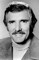
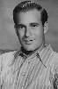

Country:United States, 89 minutes
Spoken languages:English
Genres:Action, Thriller
Director(s):Steven Spielberg
Writer(s):Richard Matheson
Video Codec:Unknown
Number: 2548


Certification:PG
Storyline:
Traveling businessman David Mann angers the driver of a rusty tanker while crossing the California desert. A simple trip turns deadly, as Mann struggles to stay on the road while the tanker plays cat and mouse with his life.
Cast:  

Medium: Original DVD,
Loaned: No
Aspect ratio: Unknown